Películas
Los siete samuráis
Ficha Técnica
Título original: "Sichinin No Samurai"
Año: 1954.
Director: Akira Kurosawa.
Protagonistas: Takashi Shimura (Kanbei), Toshiro Mifune (Kikuchiyo),
Isao
Kimura
(Katsushiro), Kamatari Fujiwara (Manzo), Minoru Chiaki (Heihachi), Daisuke Kato (Shichiroji),
Seiji Yiyaguchi (Kyuzo), Yoshio Inaba (Gorobei), Keiko Tsushima (Shino), Bokuzen Hidari
(Yohei).
Argumento: La acción transcurre en el Japón del siglo XVI. Los
habitantes de
un poblado de campesinos, hartos de ser periódicamente asaltados por una horda de bandidos,
deciden hacer algo al respecto. El miembro más anciano del pueblo sugiere contratar samuráis
para que los defiendan. Tras varios intentos fallidos de encontrar samuráis dispuestos a luchar
tan solo a cambio de comida, encuentran a uno llamado Kanbei, que decide ayudarlos. Gracias a
Kanbei, consiguen reunir a un grupo de siete samuráis que defenderán el poblado más por su
valentía y ética que por los dos puñados diarios de arroz que se les ofrecían.
 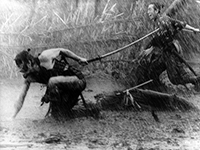
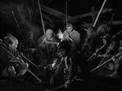
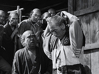
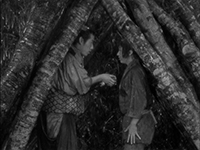
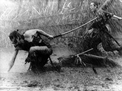
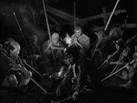
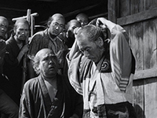
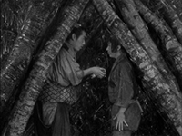
 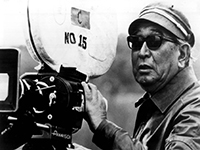
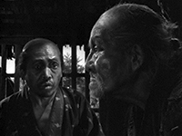
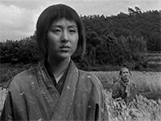
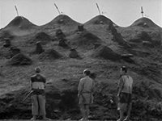
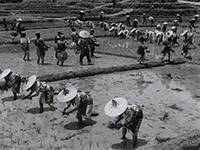
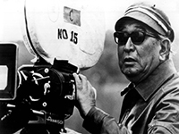
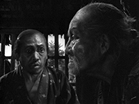
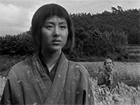
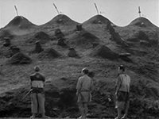
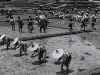
Imágenes
- Los 7 samiráis (Derecha)
- Lucha empapada de lluvia y barro
- Preparándose para la guerra
- Kanbei cortándose el pelo
- La aldea
- Katsushiro y Shino
- Fragor de la batalla
- Akira Kurosawa, director
- Gisaku, el anciano de la aldea
- Shino, amante de Katsushiro
- Final de los samuráis
- Final de los granjeros
Los siete samuráis
Es considerada como una de las películas más grandes e influyentes de la historia,4 y es una de las pocas películas japonesas que ganó fama y popularidad en el Occidente durante muchos años. Ha sido aclamada tanto por la crítica como por el público; en 1982 fue elegida en la lista de Sight & Sound de las diez películas más grandes de todos los tiempos, y entre las diez películas preferidas de los directores en las votaciones de 1992 y el 2002.5 La película influyó en posteriores producciones occidentales, como el conocido wéstern Los siete magníficos, incluido un remake del 2016.